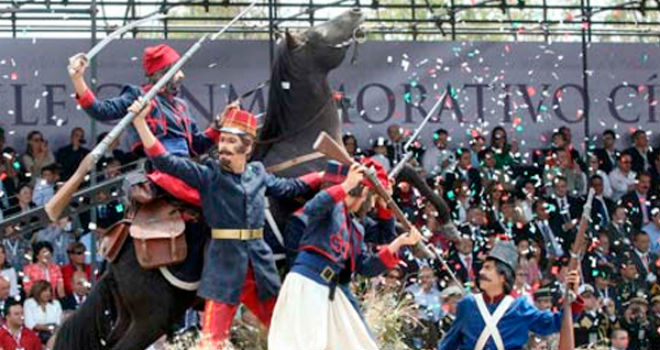

"Batalla 5 de mayo"


 1
1 2
2 3
3 4
4 5
5 6
6 7
7 8
8
Esta batalla culminó con una victoria republicana y debido a esto el grupo conservador de Márquez no pudo lograr su objetivo de auxiliar a las tropas francesas del Conde de Lorencez en la batalla de Puebla.
El 5 de mayo es una fecha entrañable para los mexicanos; se celebra en las principales ciudades del país con desfiles y verbenas. Ese día se le toma protesta en todo el país a los jóvenes que cumplen el Servicio Militar Nacional.
En estas imagenes se puede ver como se celabra la Batalla del 5 de Mayo en México


A finales de abril, Lorencez desconoció los Tratados de Soledad y se puso en marcha, junto con sus efectivos, hacia Puebla, con el fin último de conquistar la Ciudad de México. A los militares franceses los rodeaba un aura de invencibilidad en combate dado que no habían sido derrotados desde Waterloo, casi 50 años antes, con sonadas victorias en las batallas de Solferino, Magenta y Sebastopol. Esta actitud quedó de manifiesto en el siguiente mensaje, que Lorencez envió al conde Jacques Louis César Alexandre Randon, ministro de Guerra francés, poco después de la Batalla de Las Cumbres: "Somos tan superiores a los mexicanos en organización, disciplina, raza, moral y refinamiento de sensibilidades, que le ruego anunciarle a Su Majestad Imperial, Napoleón III, que a partir de este momento y al mando de nuestros 6,000 valientes soldados, ya soy dueño de México”. La confianza del alto mando francés no se debía sólo a un palmarés militar impecable, sino a la fragilidad general de México y sus instituciones. Con una economía destruida por casi 50 años de guerras civiles, con un Estado débil y una población dividida por las pugnas entre facciones, la conquista del país parecía una empresa factible con un contingente reducido.

Al conocer sobre el avance, el general Alejandro Constante Jiménez al mando de 2000 soldados se unió al general Zaragoza, que partió de Puebla con 4000 soldados para salir al encuentro de los franceses, quienes ya sostenían escaramuzas con guerrilleros. El comandante mexicano había enfrentado diversos problemas para conformar su ejército. Ante la falta de voluntarios y a que aún se mantenían hostilidades con grupos conservadores remanentes de la Guerra de Reforma, se había recurrido a la leva. Aunque se contaba con un cuerpo de oficiales joven pero experimentado, la mayor parte de la tropa carecía de la disciplina mínima, y estaba mal equipada y alimentada. En los días anteriores a la batalla, Zaragoza solicitó una y otra vez al alto mando en la Ciudad de México, el envío urgente de recursos económicos, ya que no podía costear ni siquiera los alimentos para las tropas. Para colmo, la explosión de un polvorín en la colecturía de los diezmos del poblado de San Andrés Chalchicomula (hoy Ciudad Serdán), ocurrida el 6 de marzo, había matado a 1,322 soldados de la Brigada de Oaxaca enviados por el general Ignacio Mejía para incorporarse al Ejército de Oriente.
José de la Cruz Porfirio Díaz Mori1 (Oaxaca de Juárez, Oaxaca, 15 de septiembre de 1830 - París, Francia, 2 de julio de 1915) fue un militar mexicano,Díaz peleó en varias batallas, como en la acción militar de Calpulalpan, bajo las órdenes de José María Díaz Ordaz e Ignacio Mejía
Benito Juárez vivió una de las épocas más importantes y difíciles de México, considerada por muchos historiadores como la consolidación de la nación como república. Juárez marcó un parteaguas en la historia nacional, y fue protagonista de primer nivel de esta época. Su biografía durante los años que ocupó la presidencia es una parte sobresaliente de la historia de México.
Una de las más grandes batallas que ha librado el país tuvo lugar en la ciudad de Puebla, la batalla del 5 de mayo de 1862. En la zona de los fuertes, en el mismo escenario del pasado, se ubica el museo interactivo.
El recorrido por el museo utiliza la tecnología más puntera para narrar las acciones militares y la biografía de héroes nacionales como Negrete, Díaz y Zaragoza. Pantallas táctiles, proyecciones en 3-D y contenidos interactivos descargables en dispositivos ofrecen una experiencia única al visitante

El pasaje histórico 5 de mayo se une a la red subterránea que junto con el Puente de bubas forman los “Secretos de Puebla”.
El pasaje rescata los valores ancestrales, en un recorrido por las profundidades de la Puebla colonial. 350 años de secretos guardados debajo del Centro Histórico, revelan leyendas e historias jamás contadas.
El túnel que fue intervenido, cuenta con iluminación y con recursos audiovisuales que permiten conocer su historia. En la segunda etapa descubrimos la relación con la zona de Los Fuertes y el cuartel del general Ignacio Zaragoza en San José, por lo que se cree fue fundamental para la Batalla del 5 de mayo de 1862.
Recorre los más de 1 mil metros que unen al Pasaje ubicado en el Barrio de Xanenetla y al Pasaje en Los Fuertes.
Recorre Secretos de Puebla y conoce el Puente de Bubas, el Convento de San Francisco, la zona más antigua de la ciudad, la Capilla de Santa Elena, así como los lavaderos de Almoloya, entre otros puntos.